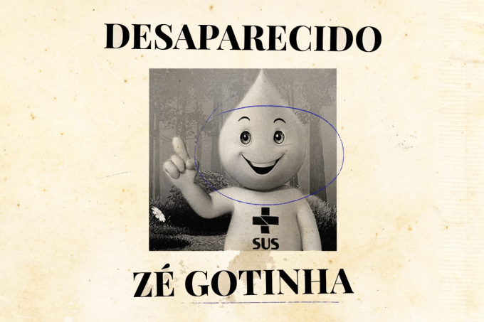
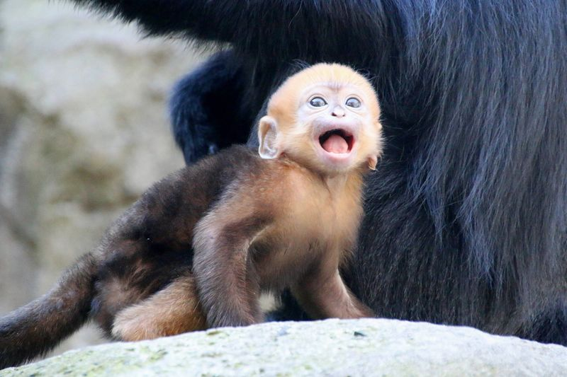
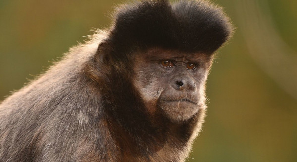

ze gotinha desaparece hoje em rio das pedras, veja:
traficante criminoso desapareceu hoje em rio das pedras, comunidade.
nexta sexta feira nove pais de crianças com pneu queimado morreram por macacos australianos, abaixo as imagens dos macacos:
 famosa thais carla morre hoje de doença da vaca louca, mas nao eram 10 famosos? é porque ela vale por 10, familia nao sabe como vai comprar caixao do tamanho dela, e se queimar, as cinzas tapam o grand canyon